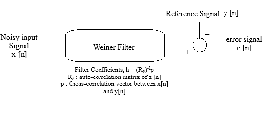

Instructions for Wiener Filtering for Sine, Cosine, AM, and DSB-SC Signals
Note:
Use the input fields to enter the input signal, message frequency (Hz), sampling frequency (Hz), filter order, and the SNR (in dB).
Step 1:
Click on
'Generate Reference Signal'
button to generate the reference signal
Step 2:
Click the
'Generate Noisy Input Signal'
button to generate the noisy input signal by applying AWGN to the reference signal.
Step 3:
Click on
'Generate PSD for Noisy Signal'
to view the power spectral density of the noisy signal
Step 4:
Click on
'Compute Filter Coefficeints'
to compute and view wiener filter Coefficients
Step 5:
Click on
'Generate Estimated Signal'
to view the estimated (filtered) signal from the Wiener filter.
Step 6:
Click on
'Generate Residual Signal'
to view the difference between the reference signal and the filtered signal
Input signal:
Select an input
Sine Wave
Cosine Wave
AM Signal
DSBSC Signal
Message Frequency (Hz):
Carrier Frequency (Hz):
Sampling Frequency (Hz):
Filter Order:
SNR (in dB):

Generate Reference Signal
Generate Noisy Input Signal
Generate PSD for Noisy Signal
Compute Filter Coefficeints
Generate Estimated Signal
Generate Residue Signal
Compare Signals
Generate PSD for Estimated Signal
Reset Simulator
Plot MSE vs SNR